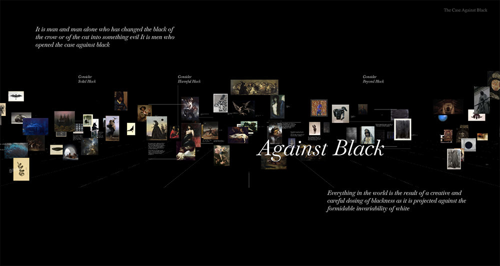
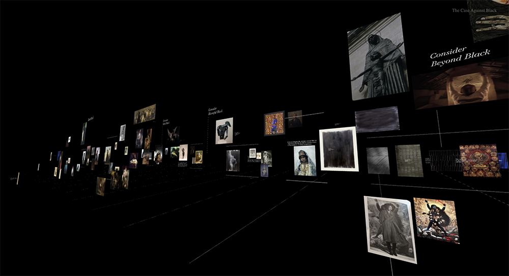
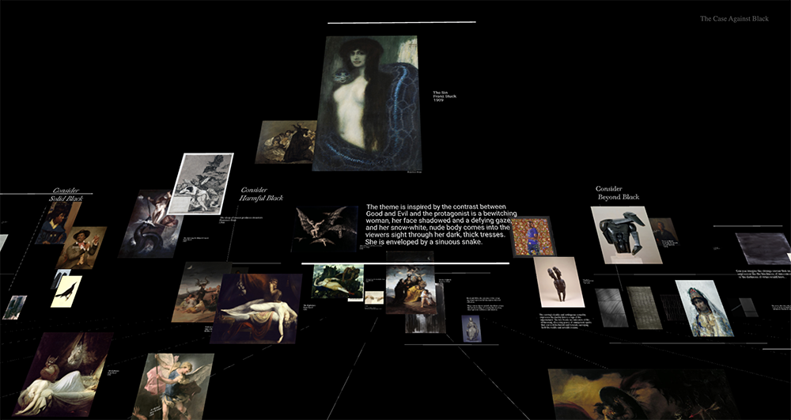
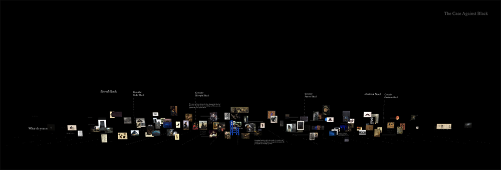

How to navigate the Case
Take a second to orient yourself in the space.
It is a lot like a void, so you need a bit of time to adjust to it.
You are greeted by the title and the two opposing views that formulate the Case Against Black: top and bottom.

To navigate, use the arrow keys to move backwards, forwards, left and right. The mouse can be used to orient the camera.

Designated editorial spaces with text and image correlate logically around an idea. They are arguments in the Case
Against Black, but being pro or con is left up to the viewer.

Outside of the editorial spaces, the content, both written
and visual is open to spontaneous interpretation. The viewer
is invited to form their own compositions, make connections
and explore their own perceptions.
The cloud is arranged on a spectrum of Literal to Abstract,
from objects, through manifestations, to concepts.
There are four argument zones to consider:
Solid, Harmful, Beyond and Luminous.

Take your time to stroll through the cloud.
Enter : The Case Against Black.